Frequent Pattern Mining
Why the model was chosen:
The FP-Growth algorithm was chosen for its efficiency in mining frequent patterns without candidate generation. This makes it particularly suitable for large datasets like ours, where computational efficiency is critical.
Model Assumptions:
The FP-Growth algorithm assumes that the dataset can be represented as a set of transactions, where each transaction contains a list of items. It also assumes that the data is preprocessed to remove noise and irrelevant features.
Hyperparameter Tuning:
The key hyperparameters tuned were the minimum support threshold and the maximum length of itemsets. A minimum support of 0.001 was selected to ensure that rare but potentially meaningful patterns were captured. The maximum itemset length was set to 2 to focus on pairwise relationships.
Before & After Cleaning:
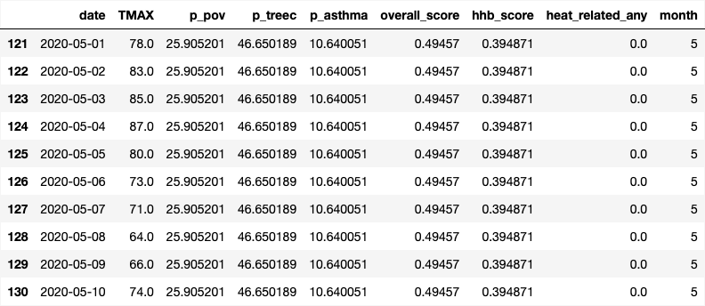
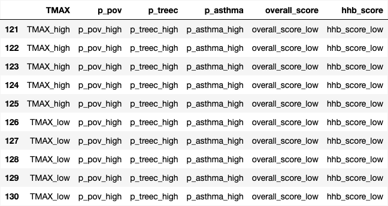
Challenges & Solutions:
One challenge was the rarity of the target event, "heat_event_yes," which made it difficult to generate meaningful rules with high confidence. This was addressed by lowering the confidence threshold and focusing on lift as a more appropriate metric for rare outcomes.
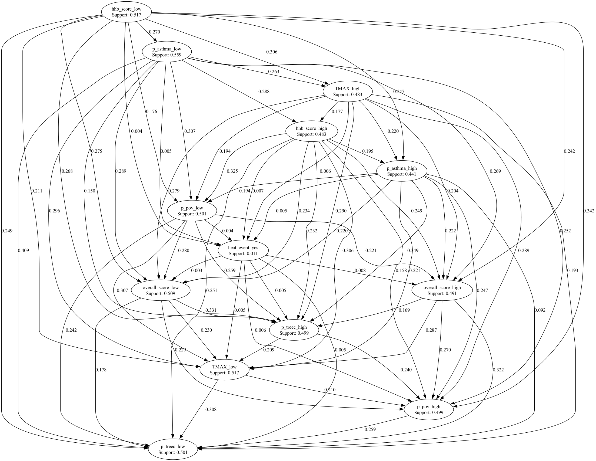
Evaluation Metrics:
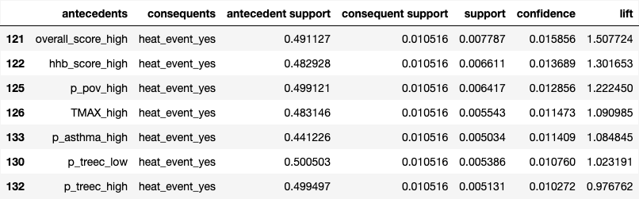
Interpretation:
The resulting itemsets and rules highlighted key factors associated with heat-related events. High vulnerability indicators such as high overall score, high HHB score, high poverty, and high temperature were strongly associated with the target event. These insights can inform targeted interventions to mitigate heat-related risks.
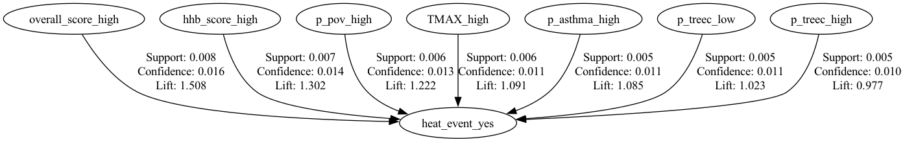
Classification
Why the model was chosen:
A decision tree classifier was chosen for its interpretability and ability to handle both numerical and categorical data.
Model Assumptions:
The decision tree model assumes that the data is independent and identically distributed, and that the relationships between features and the target variable are additive.
Hyperparameter Tuning:
For the decision tree model, preprocessing was essential because the raw dataset contained a mix of date, categorical, identifier, and numeric variables. The original file had 196,943 rows and 23 columns, and the target variable heat_related_any was extremely imbalanced, with only 1,162 positive cases (0.59%) and 195,781 negative cases (99.41%). To make the data usable for modeling, the date column was converted to a datetime format and expanded into new temporal features (year, month, day, dayofyear, weekday, and is_weekend) so the model could capture seasonality and calendar effects. The original date field was then dropped, and the id column was removed because it duplicated station. In addition, leakage-related variables such as heat_related_disaster_count, heat_related_area_count, heat_related_counties_affected, and disasters_count were excluded so the model would not learn from variables that directly reveal the outcome. After preprocessing, the model used 22 input features, including 20 numeric variables and 2 categorical variables (station and state). Although decision trees are often described as handling categorical data well conceptually, the scikit-learn implementation still requires numeric input, so station and state were one-hot encoded, while missing numeric values were imputed with the median and missing categorical values with the most frequent category.
Before & After Cleaning:
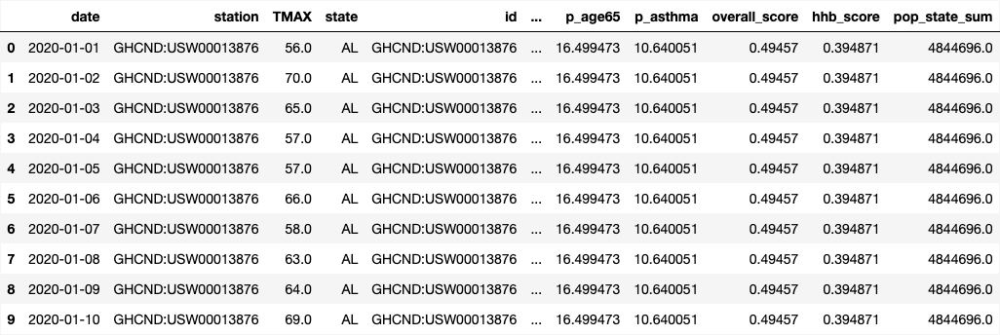
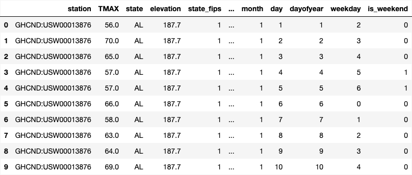
Challenges & Solutions:
The main challenge was the severe class imbalance in the target variable. Solutions included using class weights to balance the classes and employing hyperparameter tuning to optimize the model's performance on the minority class.
Evaluation Metrics:
Accuracy: 0.8071
Precision: 0.0264
Recall: 0.8800
F1 Score: 0.0513
ROC-AUC: 0.8874
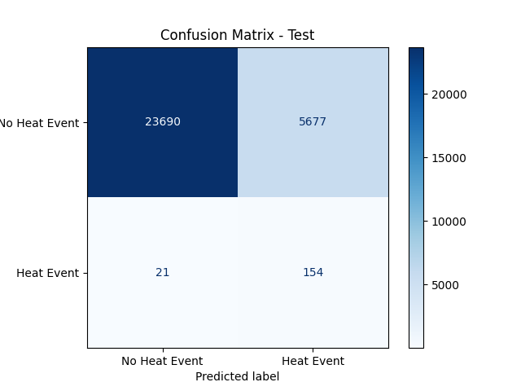
Interpretation:
A baseline tree with class_weight="balanced", max_depth=5, and min_samples_leaf=10 was first trained to address the severe class imbalance. On the validation set, it achieved 79.52% accuracy, 70.69% recall for the positive class, 0.7834 ROC-AUC, and 0.0238 PR-AUC, but its precision was only 0.0201, meaning it produced many false positives. Hyperparameter tuning with RandomizedSearchCV selected criterion='entropy', max_depth=10, min_samples_split=10, min_samples_leaf=1, and ccp_alpha=0.001, using average precision as the tuning metric because accuracy alone would be misleading on such an imbalanced dataset. After retraining the tuned model on the combined training and validation sets, the final test results were 80.71% accuracy, 88.00% recall, 0.0264 precision, 0.0513 F1-score, 0.8874 ROC-AUC, and 0.0580 PR-AUC. These results show that the model was relatively strong at detecting rare heat-related events but weak at making highly precise positive predictions. In other words, the decision tree is useful when the project prioritizes finding as many true heat-related cases as possible, but its low precision suggests that many flagged events are false alarms, which is a common challenge in highly imbalanced classification problems.
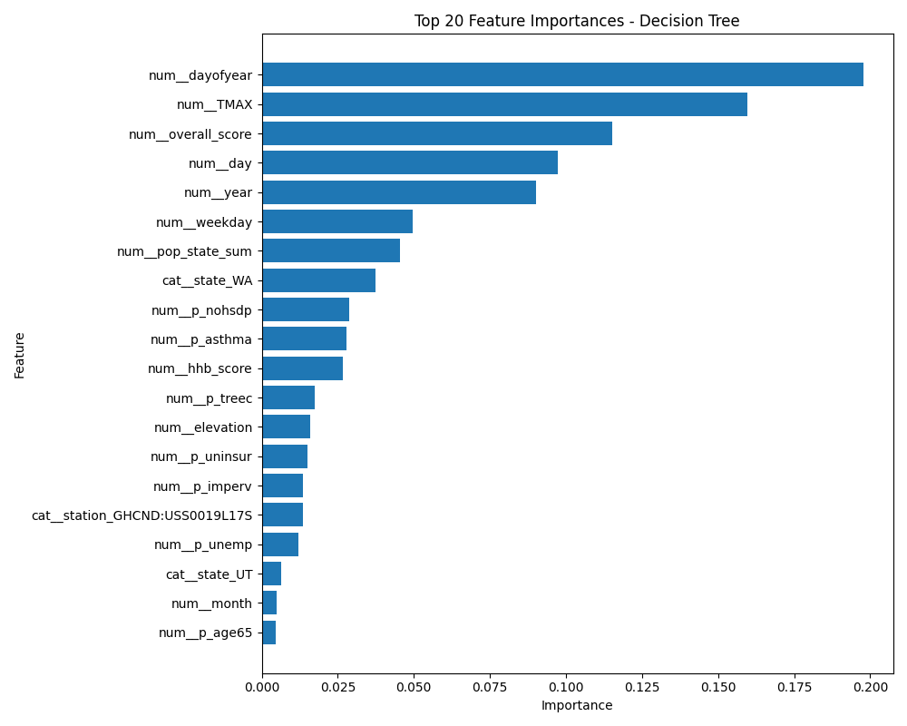
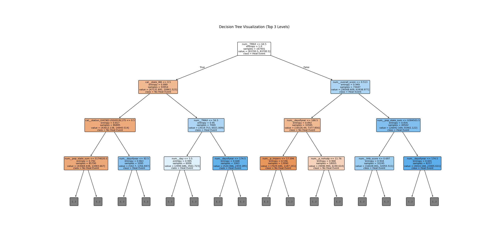
Clustering
Why the model was chosen:
K-Means was selected because it is a simple and efficient unsupervised learning algorithm for identifying natural groupings in large tabular datasets. This dataset contains many continuous numerical variables related to temperature, elevation, vulnerability, asthma prevalence, tree cover, and other environmental and social indicators, so it was appropriate to explore whether similar observations could be grouped into clusters without using the target variable. K-Means was especially useful here because the goal was to discover hidden structure in the data and then compare how heat-related outcomes differed across those groups.
Model Assumptions:
K-Means assumes that clusters are spherical and equally sized, which may not always hold true in real-world data. It also assumes that the features are on a similar scale, which is why we performed feature scaling before applying the algorithm.
Hyperparameter Tuning:
The main hyperparameter tuned for K-Means was the number of clusters, `k`. A sample of 20,000 observations was used to test values from `k = 2` to `k = 11` in order to reduce runtime while still evaluating the structure of the data. The model was assessed using the Elbow Method, Silhouette Score, and Davies-Bouldin Index. Among the tested values, `k = 9` produced the best clustering quality with the highest Silhouette Score of **0.2270** and the lowest Davies-Bouldin Index of **1.4933**, so it was selected as the final model. The final model also produced an inertia value of **1,583,681.4915**. Although the Silhouette Score is not very high, it still suggests that there is some meaningful cluster structure in the dataset, while also indicating that the clusters are only moderately separated rather than perfectly distinct.
Before & After Cleaning:
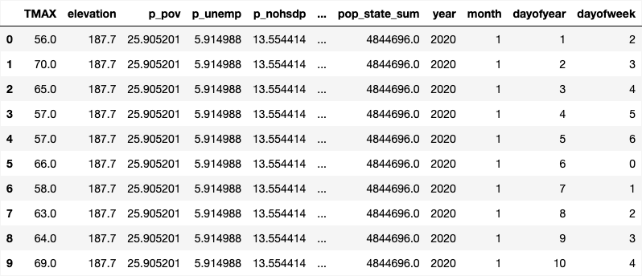
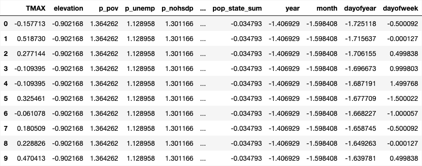
Challenges & Solutions:
One of the main challenges faced during clustering was the moderate separation between clusters, as indicated by the relatively low Silhouette Score. This was addressed by carefully tuning the number of clusters (`k`) and using multiple evaluation metrics (Elbow Method, Silhouette Score, and Davies-Bouldin Index) to select the optimal value of `k`. Additionally, preprocessing steps such as feature scaling and handling missing values were crucial to ensure that the algorithm performed effectively.
Evaluation Metrics:
Silhouette Score: 0.0227
Davies-Bouldin Index: 1.4933
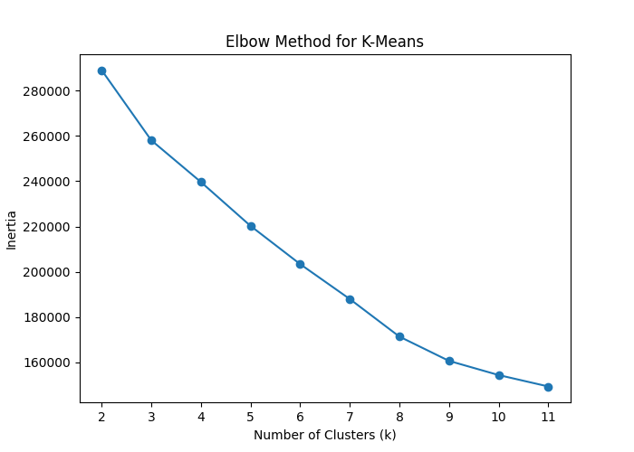
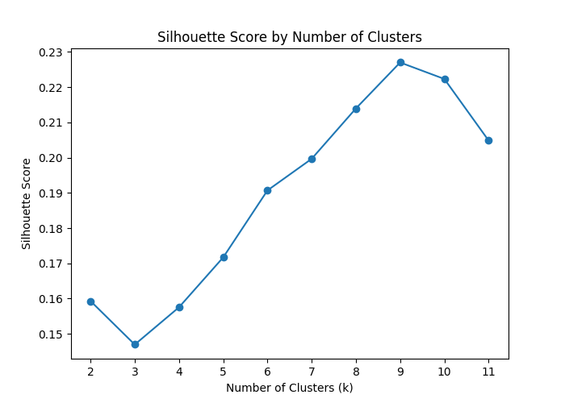
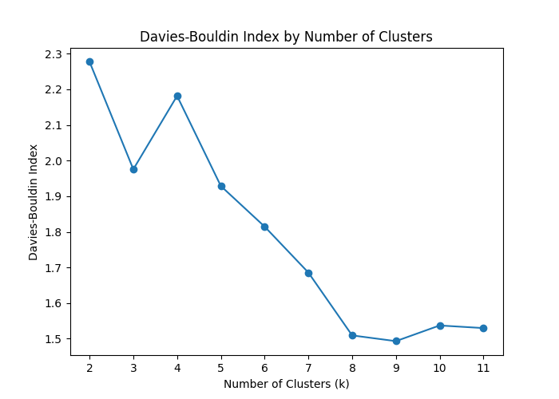
Interpretation:
The final K-Means model created 9 clusters with uneven cluster sizes, ranging from **1,826** records in Cluster 7 to **32,307** records in Cluster 6. After clustering, the target variable `heat_related_any` was used only for interpretation, not for training. The heat-related event rate varied noticeably across clusters, showing that the clusters captured meaningful differences in risk. The highest heat-related rates appeared in **Cluster 4 (0.0114)**, **Cluster 6 (0.0105)**, and **Cluster 8 (0.0088)**, while the lowest rate appeared in **Cluster 0 (0.0012)**. These higher-risk clusters generally showed combinations of elevated temperature, higher poverty or vulnerability measures, and in some cases higher impervious surface percentages, suggesting that both environmental exposure and social vulnerability may contribute to greater heat-related risk. Overall, the K-Means model was useful for segmenting the data into interpretable groups, even though the separation between clusters was moderate rather than strong.
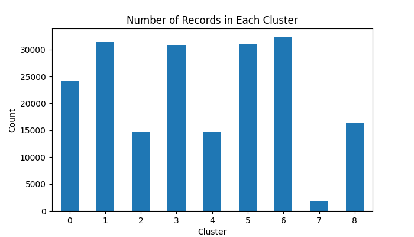
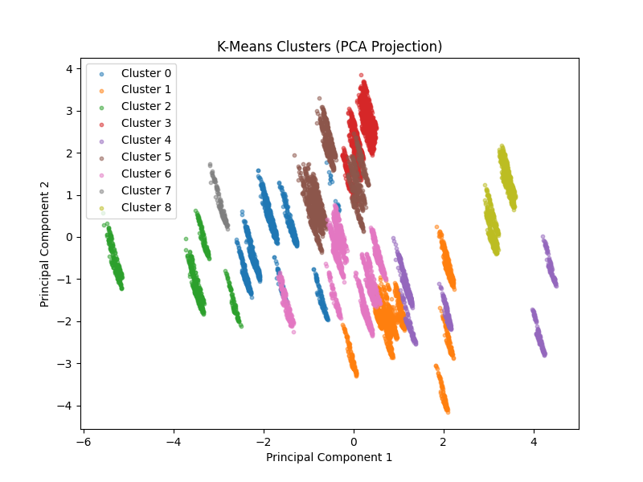
Regression
Why the model was chosen:
Logistic regression was chosen for its simplicity, interpretability, and suitability for binary classification problems. It allows us to model the probability of a heat-related event occurring based on the various environmental and social features in the dataset, while also providing insights into the importance of each feature through its coefficients. Additionally, logistic regression is less prone to overfitting compared to more complex models, making it a good choice for this dataset, which has a relatively low number of positive cases (heat-related events) compared to negative cases.
Model Assumptions:
Logistic regression assumes a linear relationship between the independent variables and the log-odds of the dependent variable. It also assumes that the observations are independent, there is no multicollinearity among the independent variables, and that the dataset is sufficiently large to provide reliable estimates. In this case, the target variable `heat_related_any` is binary, making logistic regression an appropriate choice for modeling the probability of a heat-related event occurring based on the various environmental and social features in the dataset.
Hyperparameter Tuning:
Before training the logistic regression model, the dataset was carefully preprocessed so it matched the model's requirements. The target variable was heat_related_any, which is a binary outcome, making logistic regression an appropriate choice. Several columns were removed because they would cause target leakage, including heat_related_disaster_count, heat_related_area_count, heat_related_counties_affected, and disasters_count, since these variables already contain information closely tied to the outcome being predicted. The original date column was converted into more useful numerical features such as year, month, dayofyear, and dayofweek, while redundant columns like id and state_fips were excluded. After preprocessing, the feature matrix contained 19 input variables. The data was then split using stratified sampling into training, validation, and test sets so that the very small positive class rate remained consistent across all sets. Because logistic regression requires numeric input, the categorical features station and state were one-hot encoded, numerical features were imputed with the median if needed and scaled using StandardScaler, and the final transformed training data expanded to 169 features.
Before & After Cleaning:
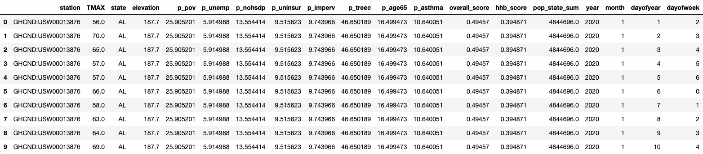
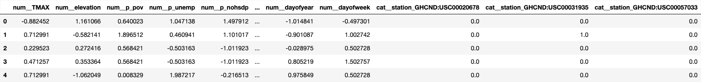
Challenges & Solutions:
One of the main challenges was the highly imbalanced nature of the dataset, with a very small positive class rate. This was addressed by using class_weight="balanced" to give more weight to the minority class during training. Additionally, the classification threshold was adjusted to optimize the F1-score, which is more appropriate for imbalanced datasets than accuracy.
Evaluation Metrics:
Accuracy: 0.9752
Precision: 0.0440
Recall: 0.1552
F1-Score: 0.0686
ROC-AUC: 0.7895
Interpretation:
The model results show both the strengths and limitations of logistic regression on this highly imbalanced dataset. The baseline model with class_weight="balanced" achieved a validation ROC-AUC of 0.7812, which suggested the model could separate the classes reasonably well, but its precision was extremely low because positive cases were rare. After tuning, the best hyperparameters were C = 0.01 with class_weight = "balanced", and the classification threshold was adjusted to 0.8269 to improve the F1-score. On the final test set, the model achieved an accuracy of 0.9752, precision of 0.0440, recall of 0.1552, F1-score of 0.0686, and ROC-AUC of 0.7895. The confusion matrix showed 28,782 true negatives, 586 false positives, 147 false negatives, and 27 true positives. Although the accuracy appears high, this is mainly because most observations belong to the negative class, so metrics like recall, F1-score, and ROC-AUC provide a more meaningful evaluation. Overall, the model was moderately effective at distinguishing heat-related events, but the low precision and recall indicate that predicting rare events in this dataset remains challenging.
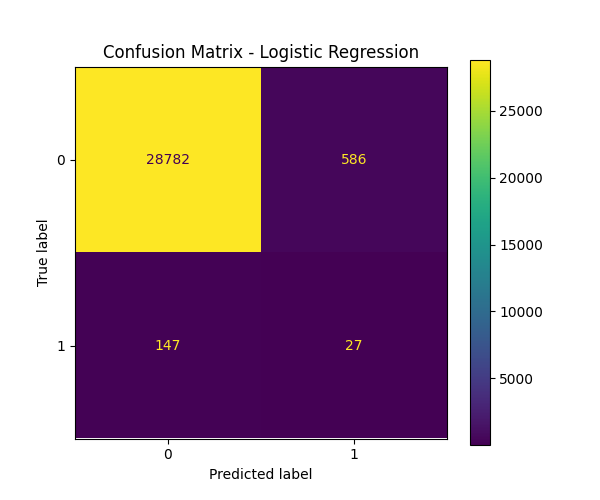
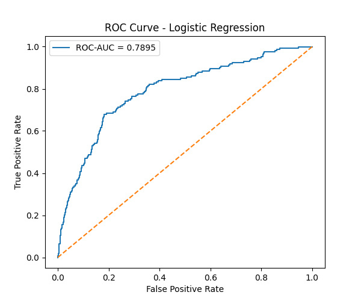
Final Comparison & Justification